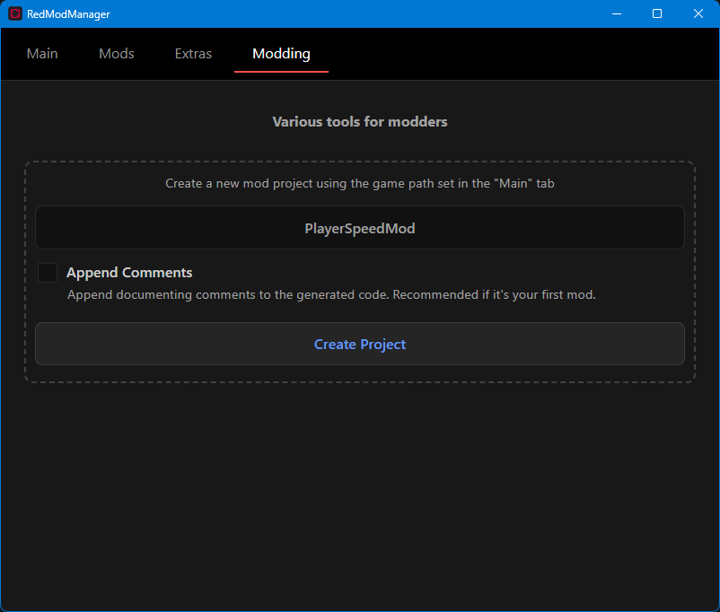
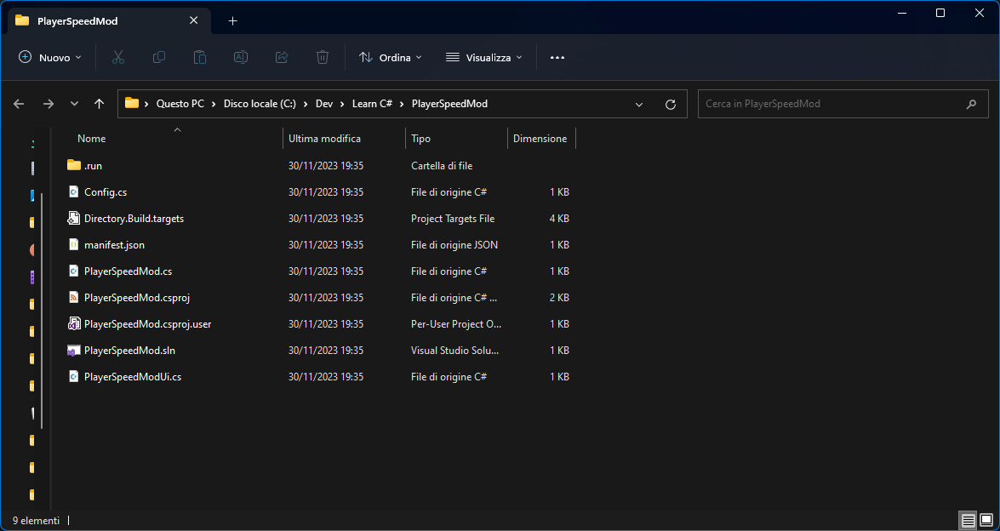
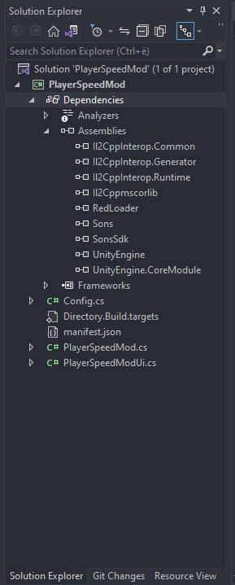
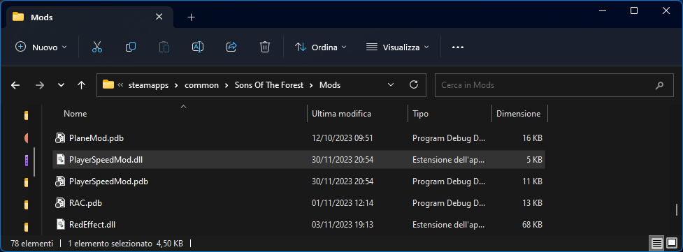

Now load into a savegame, and right before spawning your 2 lines of code will get executed, changing the player walk speed to 10 and run speed to 20, making the player move faster!

To create the mod project, open up RedModManager and navigate to the Modding tab.
If not already, install the RedLoader mod template using the button on screen.
Give a name to the mod like PlayerSpeedMod
and click the Create Project button.

Choose a folder in which the mod project will be created and you will be presented with a folder like this

Now open the .sln file and you will now have the mod project opened and ready to work with in Visual Studio.
As you can see we have our three predefined methods we talked about before plus one which we won't need right now.
using SonsSdk;
namespace PlayerSpeedMod;
public class PlayerSpeedMod : SonsMod
{
public PlayerSpeedMod()
{
//HarmonyPatchAll = true;
}
protected override void OnInitializeMod()
{
Config.Init();
}
protected override void OnSdkInitialized()
{
PlayerSpeedModUi.Create();
}
protected override void OnGameStart()
{
}
}
For this mod we will only need to use OnGameStart because we don't need to create/use a config file nor making an UI etc.
The focus is to only change the player walk and run speed, and hear hear hear... you are only 2 lines of code away from it!
But before we do that, we need to add a reference to a game dll which contains informations about the Player.
In this case the .dll is named Sons.dll
. In addition to containing references about the Local Player,
this one also contains many other references that will vastly expand the modding capabilities.
We can say it's like the main dll, and you will use it most if not all the times you make a mod.
To add a dll reference to the project head to the solution explorer (on the right or left of the screen)
and right click on Dependancies, then Add Project Reference..., click Browse... on bottom
right corner and navigate to the game path that normally is (C:\Program Files (x86)\Steam\steamapps\common\Sons Of The Forest).
Open the _RedLoader folder and the Game folder.
These are all the dll's which contain informations about the game and that you can add as a reference to expand the modding capabilities.
For now and for this mod, we will just add Sons.dll
because it's all we need to change the player speed.
So select it, click on Add and then OK to confirm.
If you open the Dependancies dropdown menu in the solution explorer and then the Assemblies dropdown you can
see all the dll's which are added as a reference to the mod project.
If you look closely, you will see that there is also our Sons.dll
which we added before.

As we said before, we only need two line of code to change the Player walk and run speed, and so accomplish our mod.
We will change the player speed right after the savegame has been loaded, so inside the OnGameStart method, since it's when the Player is created
(e.g we can't access the Player while we are in the main menu because it doesn't exist yet).
To use the Sons.dll
we added before inside a .cs file we need to include it adding using Sons
at the top of the page.
using SonsSdk;
using Sons; // we added this line to use our referenced Sons.dll in this file
namespace PlayerSpeedMod;
public class PlayerSpeedMod : SonsMod
{
public PlayerSpeedMod()
{
//HarmonyPatchAll = true;
}
protected override void OnInitializeMod()
{
Config.Init();
}
protected override void OnSdkInitialized()
{
PlayerSpeedModUi.Create();
}
protected override void OnGameStart()
{
}
}
Now, inside our OnGameStart method we will write the mod code which will change the player speed.
To change the player speed we need to reference the LocalPlayer and then the FirstPersonCharacter.
To do so we write LocalPlayer.FpCharacter
.
Now that we have control over our FirstPersonCharacter (named FpCharacter here), we can change whatever it's available about it.
As we said before, we want to change the player walk and run speed.
To do so, we place another dot after FpCharacter and we will see a big list of options to choose from.
If we scroll down to the S, we can see stuff named SetWalkSpeed and SetRunSpeed.
So all we need to do to change the walk speed is to write: LocalPlayer.FpCharacter.SetWalkSpeed(num value)
.
For example, try writing LocalPlayer.FpCharacter.SetWalkSpeed(10)
for the player walk speed and
LocalPlayer.FpCharacter.SetRunSpeed(20)
for the player run speed.
protected override void OnGameStart()
{
LocalPlayer.FpCharacter.SetWalkSpeed(10);
LocalPlayer.FpCharacter.SetRunSpeed(20);
}
Congratulation, the mod is basically done! We only need to build it.
To do so head on the top bar of Visual Studio and click on Build, then Build Solution. If everything went right, you will see the mod
dll inside the Mods folder

Now launch the game and in the mods tab look if there is our PlayerSpeedMod. If so, everything went right.
Now load into a savegame, and right before spawning your 2 lines of code will get executed, changing the player walk speed to 10 and run speed to 20,
making the player move faster!